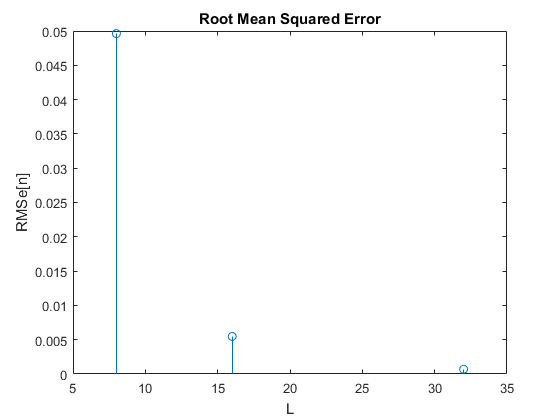

clc;
clear all;
close all;
N=64;
n=0:N-1;
fc = 1;
t=linspace(0, 1, length(n));
x = sin(2*pi*fc*t);
figure(1)
L=8;
xc=cuantizar(x, L);
E=x-xc;
RMSe8=sum(E.^2)/L
subplot(2, 1, 1); stem(t, x); hold on
stem(t, xc); grid; legend('x[n]', 'xc[n]');
title('Señal sinusoidal discretizada y cuantificada a 8 niveles');
xlabel('t [s]'); ylabel('Amplitud')
subplot(2, 1, 2); stem(t, E); grid; legend('E');
title('Error de cuantizacion');
xlabel('t [s]'); ylabel('E=x[n]-xc[n]')
figure(2)
L=16;
xc=cuantizar(x, L);
E=x-xc;
RMSe16=sum(E.^2)/L
subplot(2, 1, 1);stem(t, x); hold on
stem(t, xc); grid; legend('x[n]', 'xc[n]');
title('Señal sinusoidal discretizada y cuantificada a 16 niveles');
xlabel('t [s]'); ylabel('Amplitud')
subplot(2, 1, 2); stem(t, E); grid; legend('E');
title('Error de cuantizacion');
xlabel('t [s]'); ylabel('E=x[n]-xc[n]')
figure(3)
L=32;
xc=cuantizar(x, L);
E=x-xc;
RMSe32=sum(E.^2)/L
subplot(2, 1, 1);stem(t, x); hold on
stem(t, xc); grid; legend('x[n]', 'xc[n]');
title('Señal sinusoidal discretizada y cuantificada a 32 niveles');
xlabel('t [s]'); ylabel('Amplitud')
subplot(2, 1, 2); stem(t, E); grid; legend('E');
title('Error de cuantizacion');
xlabel('t [s]'); ylabel('E=x[n]-xc[n]')
figure(4)
n1=[8 16 32];
RMS=[RMSe8 RMSe16 RMSe32];
stem(n1, RMS);
title('Root Mean Squared Error');
xlabel('L'); ylabel('RMS{e[n]}')
RMSe8 =
0.0496
RMSe16 =
0.0055
RMSe32 =
6.9744e-04

